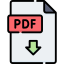

Un Mundo Feliz, de Aldous Huxley
Sinopsis
Un mundo feliz es un clásico de la literatura del siglo XX, una sombría metáfora sobre el futuro. La novela describe un mundo en el que finalmente se han cumplido los peores vaticinios: triunfan los dioses del consumo y la comodidad, y el orbe se organiza en diez zonas en apariencia seguras y estables. Sin embargo, este mundo ha sacrificado valores humanos esenciales, y sus habitantes son procreados in vitro a imagen y semejanza de una cadena de montaje.
Sesiones del mes
Sesión 1 (online): https://meet.google.com/ 15 de septiembre de 2023 Horario: 22:00 pm en MEET
Sesión 2 (online): https://meet.google.com/ 30 de septiembre de 2023 Horario: 22:00 pm en MEET